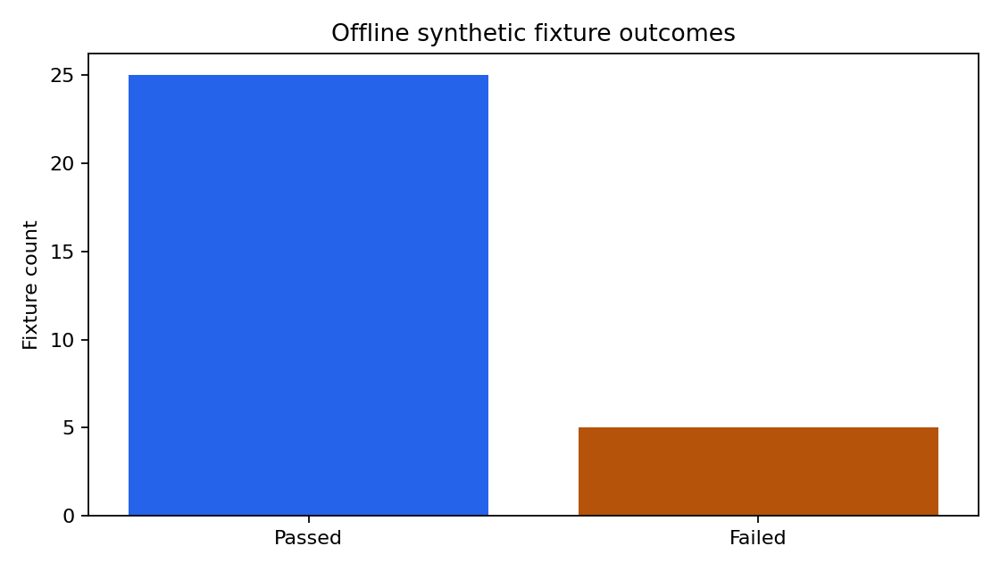

Manufacturing Knowledge Retrieval Evaluation
Author: Mohammed Adeen Shaik
Review date: 11 October 2026
Research question
Which developer-authored retrieval and control cases pass, and which failures need investigation?
Data and provenance
Fictional manufacturing documents and 30 developer-authored evaluation fixtures.
Source materials are linked from the repository README. Input fingerprints are recorded in the evidence manifest so a reader can identify the exact committed artifacts used in this review.
Method and analytical rationale
evaluate.py checks expected response status and, for answerable fixtures, the highest-ranked source. Offline BM25 extraction is evaluated; optional LLM generation is not.
Findings and interpretation
Fresh offline evaluation on 11 October 2026: 25/30 fixtures pass. Status accuracy is 83.3% and expected-source hit at rank 1 is 68.8% on answerable fixtures. These are developer-authored synthetic cases, not a held-out benchmark. 5 failures remain visible in evaluation-results.json. Optional LLM generation was not evaluated.
| Measure | Value |
|---|---|
| mode | offline extractive; LLM generation not evaluated |
| dataset | 30 developer-authored synthetic fixtures; not held out |
| cases | 30 |
| passed | 25 |
| status accuracy | 0.8333 |
| expected source hit at 1 | 0.6875 |
Limitations
Fixtures are authored by the developer and are not held out. Results do not measure production robustness. A role selector is simulation, not authentication. Failures must remain visible.
Reproduction
Use the setup commands and input contract in the repository README. Open the notebook catalogue for annotated code and saved outputs. Keep raw records and model binaries local; public reports contain aggregate results or source-embedded figures.
Final visual results

Reproduced aggregate figure: fixture-outcomes.png.